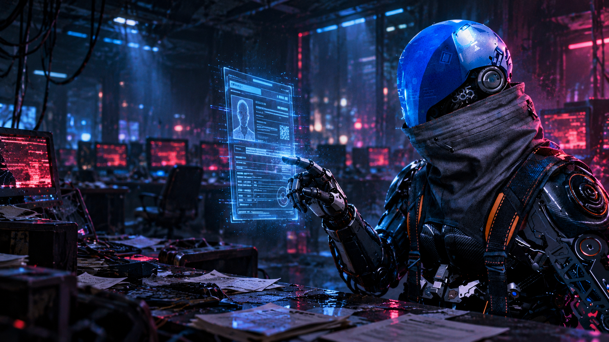

Project 2 / Human checkpoint recovery lab
Workflow Quest / CY-7
A room full of failed checkpoints. You are the operator.
INSPECTION BAY 07 · 5 CHECKPOINTS OFFLINE

HUMAN CHECKPOINTS SELECT AFTER START
0 / 5CHECKPOINTS RESTORED
Recovery protocol / awaiting operator
The room is broken. Your checks can fix it.
Click a failed checkpoint in the room. Inspect the evidence and choose the repair. Correct decisions bring stations online; missed checks stay red. Restore all five.
PLAY SOLO OR LET THE CLASS VOTE · CLICK A TERMINAL · 1 / 2 / 3 TO ANSWER
Choose your next inspection
Which checkpoint can you restore?
Click any red checkpoint in the room above. The robot scans; you decide.
01 / ORIGINAL EVIDENCE
02 / PROPOSED ACTION
Inspection complete
Presentation handoff: “These checkpoints are why my workflow needs a human. Now I’ll show my actual first run and what I changed.”
FICTIONAL RECOVERY SCENARIOS · YOUR PROJECT RUN STILL NEEDS REAL CHECKSCY-7 INSPECTS. THE HUMAN DECIDES.